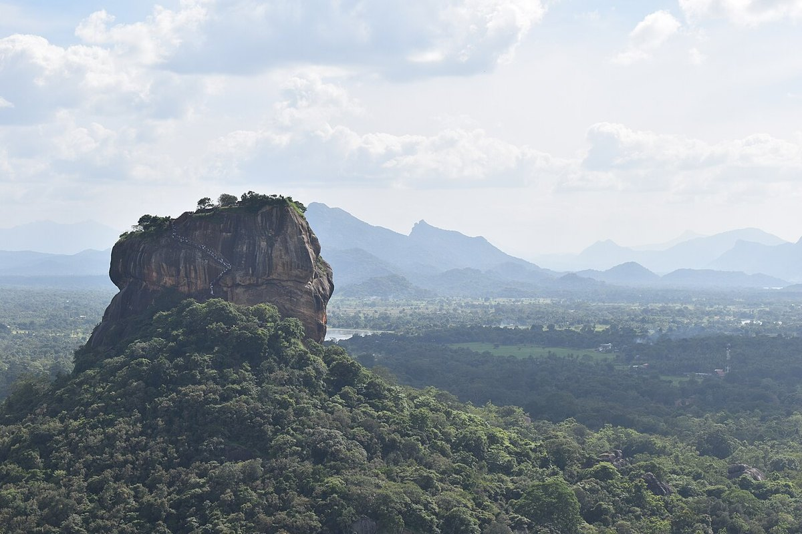

Sigiriya Rock Fortress
A 5th-century rock fortress and UNESCO World Heritage Site rising almost 200 m above the central plains.
Quick Facts
- Best time to visit: January to April
- Entry fee: USD 35 (Premium)
- Time needed: 3–4 hours
- Coordinates: 7.957, 80.7603